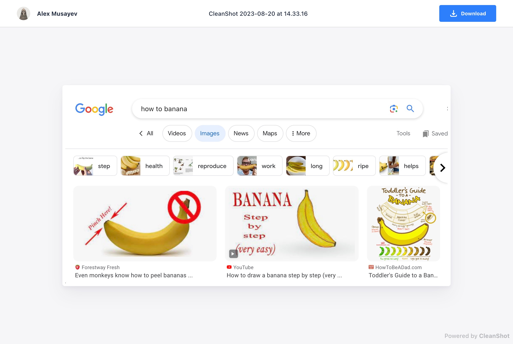
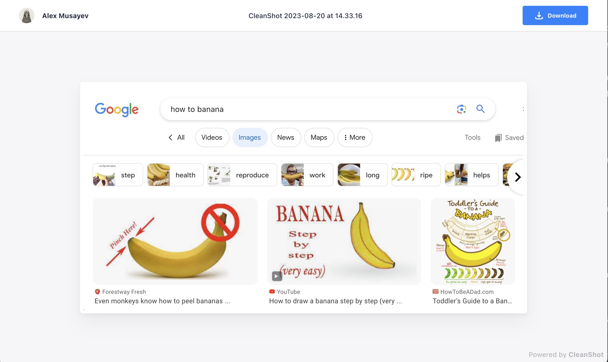

A good way to add images on Markdown-based static website pages
How do people add images on static site pages?
Typically you intend to create some directory in the source tree. Then you copy the image file to this directory and give it a unique URL-friendly name. It would be nice to associate this name with the page file name to make it easy to find in the future. So ideally, you should invent and maintain some naming convention. Then you reference this file from the Markdown page source, minding the correct relative path to the image file.
This workflow is much better than dragging things with a mouse over some web UI. But it still sounds slow and boring 🚢 Not automated enough, if you will.
Let's imagine how to make this flow it less boring.
It consist of two steps. First is to capture an image from an original source to some interim storage. Second is to put this image on a page.
1. Capturing images
Local files: Context menu → Open with... → CleanShot X → Upload. Web: You just take a screenshot with a hotkey and upload it with one click.

Both use cases end up with a short link in your clipboard.
2. Adding images on a page
CleanShot short URLs are not really direct image URLs. They open an HTML page that downscales your screenshot to fit browser window, adds your branding, etc. So what you need on the web page is not really this short URL, but the original image that you can download from there.
But we want to make the workflow suck less, while downloading stuff from the web sound like something opposite. Let's

https://share.cleanshot.com/XkgTjS1M
$ tree ~/Dropbox/Images
.
├── 20230720_4288
│ └── 43688db1c5851f1a8382a311bd0dc72b.jpg
├── 20230730_4361
│ └── 6c53cf2f2916480f9374471f64a7640b.jpg
│ └── e28f897f968246d1bd45c25aabc32bf8.jpg
└── index.json
$ cat index.json
{
"https://share.cleanshot.com/Yp166HDZ": {
"file_name": "43688db1c5851f1a8382a311bd0dc72b.jpg",
"page_uid": "20230720_4288"
},
"https://share.cleanshot.com/qZ5T6q7g": {
"file_name": "6c53cf2f2916480f9374471f64a7640b.jpg",
"page_uid": "20230730_4361"
},
"https://share.cleanshot.com/35WJDTGz": {
"file_name": "e28f897f968246d1bd45c25aabc32bf8.jpg",
"page_uid": "20230730_4361"
}
}